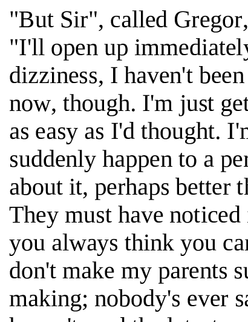

Optical Character Recognition System
| Date | December 2019 |
| Description |
This is a project we had to make as a final Data Driven Computing Assignment. The basics of the system were written by our lecturer. We had to implement Dimensionality Reduction, design the classifier and write an Error Correction function. Model produced by our code couldn't be bigger than 3 MB and the Python script had to produce the correct result in less than 2 minutes. |
| Results |
First Class Mark (78%). Those are the pictures of test pages. Hover to see the results.

|
| How it works |
Feature ExtractionI used Principal Component Analysis to produce 10 dimensional features vectors from full train and test data. I computed 40 principal components and mean vector of train data and used them to project ‘centred’ train and test data onto the principal components.ClassifierSince we need to perform classification on the noisy data, I decided to use the k-nearest neighbour classifier. Although this classifier decreased the percentage of correctness on the first 2 cleanest pages, it boosted performance on the more noisy ones, so overall my results significantly improved.Error CorrectionSince most of the words from the standard dictionary never appear in the common text, I've decided to use 2 other dictionaries – one with the most common words with apostrophes and the other one with 5000 the most frequent English words (sorted by frequency).I extracted each word from an array of labels and checked if it was in the dictionary. If not, I tried to find the best possible match. I was looking in the dictionary for the first word of the same length as the extracted text, which differs from it by 1 character. If any match was not found and the text was long enough (>7), I was looking for the words at the same length which differ by 2 (and eventually 3) characters. If nothing was found, I did not correct the labels, because I did not want to make blind guesses. It improved my performance on the noisy pages by around 1% per page. |